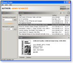
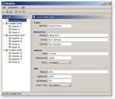

{kind=link}
{kind=link}

The JGoodies Looks make your Swing apps and applets look better. The package consists of a Windows look&feel and the Plastic look&feel family. These have been optimized for readability, precise micro-design and usability.
|  |  |
|
You can download the latest release, archived versions, and the precompiled JGoodies Looks Demo. Each distribution includes the binary library JAR, library sources, a User's Guide, JavaDocs, and demo sources.
:: What are the main benefits?
:: Can I use the Looks in a commercial product?
:: How to get started?
:: Where do I get support?
:: How to report a problem?
:: What are the differences between the Sun and JGoodies Windows L&Fs?
JGoodies Windows L&F :: Precise Emulation
The JGoodies Windows look&feel focuses on a precise emulation
on Windows 95/98/NT/ME/2000/2003/XP in the following areas:
menus, icons, colors, borders, fonts, font sizes, insets, and widget dimensions.
It honors the screen resolution (96dpi vs. 120 dpi)
to adjust sizes, insets, and widget dimensions.
High-Fidelity Multi Platform Appearance
Plastic is an elegant multi-platform look&feel family that works very well
on all Windows platforms, including XP.
The Plastic themes have been tweaked for a harmonic integration
with the majority of desktops so that your applications
won't alienate a Windows user.
Simplifying Multi Platform Support
The Looks help you support different Java versions and operating systems.
Each look is consistent over the Java versions 1.4.1x, 1.4.2x, 1.5,
and 1.6 betas - to the possible extent w. r. t. to features of the underlying Swing API.
In addition, Plastic, the JGoodies Windows look&feel, and the Mac OS X Aqua look use similar widget dimensions and widget font baselines to minimize layout differences between these looks.
The Looks library ensures the visual quality of the JGoodies freeware tools and demos - see yourself.
The Looks project has been financed by the Java desktop team at Sun Microsystems, and customers of the JGoodies Swing Suite. It is only with their money that I can provide, maintain and improve this library at no charge.
If you are a professional user, satisfied with the JGoodies Looks, please help me finance my Java desktop activities by licensing the commercial JGoodies Swing Suite.